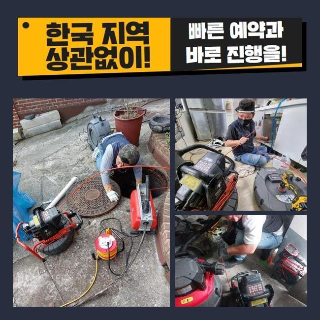
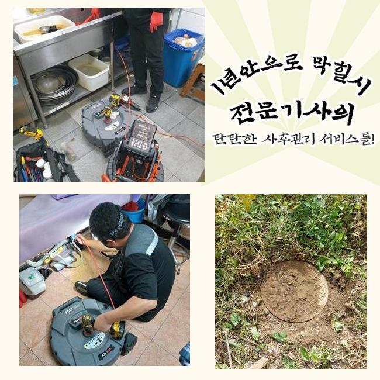
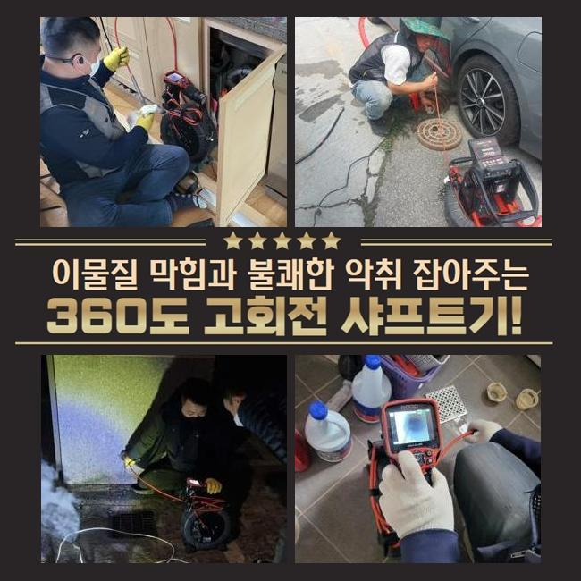
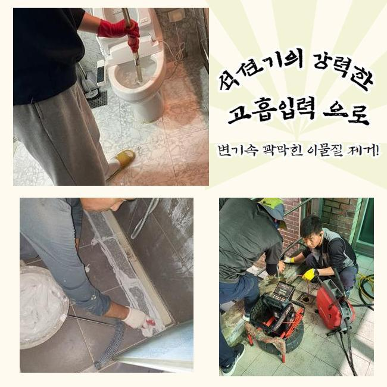
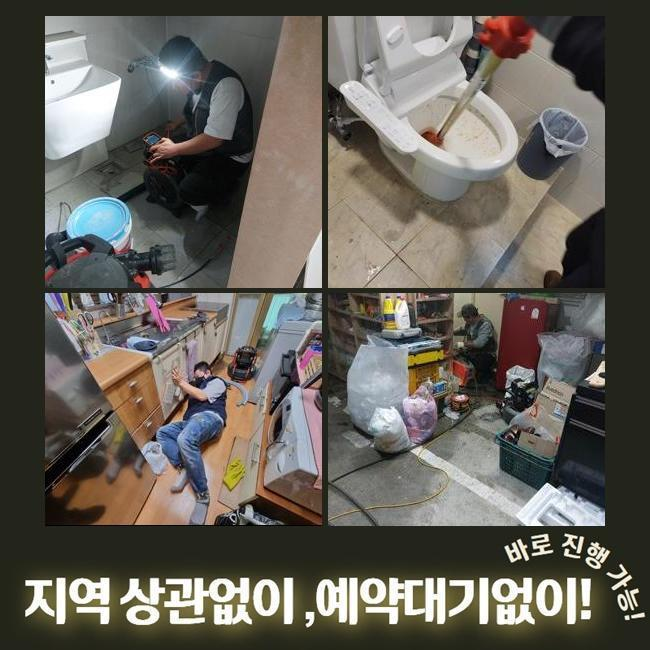
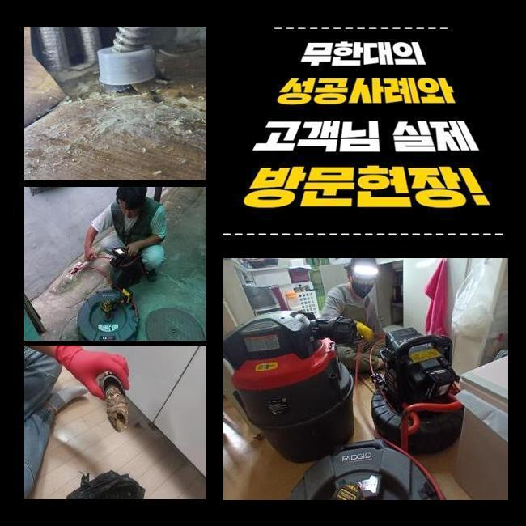

🏠 안양 박달1동화장실역류 오수맨홀청소 누수공사
안양 싱크대막힘 전문 시공 후기

📋 작업 개요
- 위치: 안양
- 서비스 유형: 싱크대막힘, 변기막힘, 하수구막힘, 배관막힘, 맨홀막힘, 누수수리, 역류해결, 뚫는업체, 배관청소, 고압세척, 설비공사, 배관보수
- 작업 일시: 2025. 3. 23. 10:59
- 업체명: 하수구수사대 (010-5615-2118)
🔍 문제 상황
안양 박달1동화장실역류 오수맨홀청소 누수공사
하수구 마비가 되면 여러 측면의 어려움들을 당할 수 있습니다
일례로 하나의 한 집 안의 싱크대가 갑작스럽게 찌꺼기가 차서 계속 물이 차오르는 문제들도 흔하며 변기설비나 바닥 배수구 세탁기 탈수 물이 안빠져서 이용에서의 어려움이 벌어지기도 합니다
공동주택 거주자에게서 의뢰를 받은 상황이라면 개인 세대상의 오류라서 실내 쪽에서 뚫는 장치들을 적용해서 해결을 보고 있습니다
공용으로 쓰는 메인관로는 아파트의 경우라면 문제가 없는지 확인하고 일정 시기마다 배관 속을 정리해주니 이 부분이 말썽을 부리는 경우는 상대적으로 적습니다
영업장이 자리한 빌딩이면 하수 문제가 나타날 경우의 수가 통계적으로 많기는 합니다
이번 막힘 케이스는 상업용 건물 안에 자리한 주요배관이 막히는 바람에 영업공간 안에 설치된 각각의 설비들이 다 중단되어서 문제 요인을 찾아달라며 저희를 찾아주신 것이었습니다
자세한 내막을 보니 오류가 있다는 게 감지된 메인 배수로가 있는 장소가 감지되었습니다
이 통로가 막힐 땐 집들에 설치되어 있는 가지관의 문제라고 단정 짓기는 어려우며 공용으로 쓰는 배관에 변형이나 마모가 생겼거나 불필요한 물질이 쌓여서 배수기능이 마비되었을 가능성이 농후합니다

🔎 원인 분석
💡 전문가 진단: 정밀 진단 장비를 사용하여 슬러지의 고착 여부를 판명하고 타격/세척 작업을 실시했습니다.
물이 수렴해서 흘러가는 관로부터 통로를 내고 점차 사이즈가 작은 관로 작업으로 진행돼요
높은 위치에 자리한 배관 통로였기에 사다리 발판을 밟고서 시공하기로 결정했고 막혀있는 하수구의 처리를 도와줄 장치들을 끌고가서 세팅했습니다
가까운 곳을 정리해도 내부 깊은 곳은 아직 제기능이 회복이 안됐으므로 메인 파이프를 관리할 때에는 관로의 중앙 부근까지 긁어내는 작업을 해줘야 합니다
파이프 커버를 개방하고 장비 들어갈 구멍을 정해서 조치를 취할 수 있을 법한 활동 반경을 만들어줍니다
내시경 기기라는 카메라로 시선이 닿지 않는 배관 속의 실황을 봐주기로 했습니다
얼만큼 마비가 됐는지 이번 고장을 야기했던 대상에 관하여 장비 가동 직전에 판단해야 시공 우선순위를 정립할 수 있게 됩니다
메인배관 쪽 오류는 보편적으로 배관 크기가 여유롭고 길이도 길어서 단독주택처럼 간단한 건수에 내방할 때 가져가는 석션으로는 수습이 힘들어요
호스 길이가 아래쪽까지 닿지 않기 때문에 배출량도 감당이 안 됩니다
기름 슬러지를 분쇄해서 제거할 수 있게 돕는 걸 도맡는 플렉스샤프트 장비 단시간만에 완료되지 않으며 작업부분 훼손도 불가피해서 어렵겠다 싶었네요

🔧 작업 과정
상가 내에 설치된 하수구의 개방이 이뤄지지 못하면 얼른 물길을 내서 안정화를 시켜줘야 합니다
넓은 곳에는 고압수를 통해 여기저기에 붙어있는 찌꺼기를 싹 쓸려나갈 수 있도록 청소하여 파이프 내부를 새것처럼 닦아내야 수시로 봉인되는 일들을 처치할 수 있습니다
관로에 여유공간이 전혀 없다면 배관 안을 정돈하기가 더 복잡해지니 일단은 스프링 기기가 닿이는 봉인되어버린 파트를 집중 타격해서 통수가 되게끔 해주고 말끔한 하수구 청소를 진행하기로 정했습니다
장치를 해당 위치로 넣으려고 슬러지가 꽉 찬 부분에 접근성을 향상시키는 공간을 만들어주었습니다
이번에 담당한 현장은 여러 개의 식품 영업장들이 존재하는 상태였고 그만큼 기름기도 많이 유출되는 바람에 배수관 속에 기름막이 뿌옇게 뒤덮여 있었습니다
고착화된 유막은 온수로도 영향을 덜 받기 때문에 더 버석하게 된다면 석회화가 이뤄져서 딱 달라붙게 되는 상태가 되어버립니다
이렇게 되기 전에 스케일링을 해주지 않고 누적되는걸 내버려둔다면 일부 구간에서부터 규모가 더 확대되면서 이동이 불가하도록 꽉 메워져서 배수가 영구적으로 이뤄지지 않게 되어버려요
유분기가 많은 기름기를 속시원하게 제거하기 위한 루트는 고압세척기기이며 분사력 덕분에 걸리는 부분 없이 오염원이 가득 찬 수로를 맑게 전환해줄 수 있었습니다
거의 흡착된 듯 붙어있던 것들이 세찬 물줄기로 인하여 분리되어가는 모습을 내시경을 안으로 넣어서 검토하면서 청소해나갔습니다
꿈쩍하지 않을 듯 했던 거대한 덩어리들이 자취를 감추기 시작했으며 소규모 크기의 입자만 떠다니는 상태로 보였습니다
일단 고압세척을 해야한다고 결정나면 거의 예외 없이 의심되는 장애요소가 있는 곳들을 두루 긁어내야만 나중에 다시금 막혀버리는 사태가 유발되지 않아요
오랜기간 머물렀을 기름기를 강력한 물줄기로 해체시키고 꾸준히 활용해온 내시경으로 구석구석을 체크하면서 나아졌는지 조명해보았습니다
초반에 하수구를 관측해봤을 때는 완전봉쇄 됐다 싶을 정도로 지저분했던 설비시설이었으나 다수의 기구들을 활용한 처리를 거쳤더니 전부 해체가 되고 사라진 쾌적함을 느낄 수 있었습니다
물이 잘 내려가야하니 수도꼭지를 틀어서 물을 흘려보내면서 순조롭게 물이 빠져나가는 완전히 차원이 달라진 성능을 거듭 검사를 거쳐서 보고서 시공이 끝났음을 말씀드렸어요


✅ 작업 완료
원활한 접근성을 위해 피치 못하게 뚫어줬던 구멍은 보완을 해주는 테이프로 꼼꼼하게 덮어서 누수문제가 나타나지 않게 보수시공을 담당했습니다
이번 현장은 막힘건으로 수많은 컴플레인이 이어지던 상가 내의 업장에서 물기가 그대로 머물렀고 싱크대 수돗물의 역류 증세도 신통방통하게 고쳐드리고 사무실로 향했습니다
사이즈가 남다른 배수로라면 스스로 처리하기가 힘든 상황이니 급한 마음을 반영해서 무대포로 작업한다가 파이프에 손상이 가는 사례도 아주 많습니다
일반 가정집은 물론이고 특수한 공간이나 상업시설이라도 하수관에 대한 이해를 바탕으로 정상화를 해드리고 있으니 개선을 해보셨으면 좋겠습니다




⚠️ 베란다 누수 및 방수 관리 방법
- ✅ 비가 많이 올 때 창틀 주변이나 아래층 천장에 얼룩이 생기는지 정기적으로 확인해 보세요.
- ✅ 우수관 주변 실리콘 마감이 들뜨거나 깨진 틈새가 있는지 손상 여부를 수시로 체크하세요.
- ✅ 베란다 바닥 타일의 줄눈(메지)이 소실되면 그 틈으로 물이 침투하여 누수가 유발됩니다.
- ✅ 누수 의심 증상 발견 시 방치하면 아래층 손실이 커지므로 즉시 전문가의 진단을 받으십시오.
💡 핵심 정리
- 확실한 장비 작업(내시경 점검 및 샤프트 스케일링)으로 원인을 뿌리 뽑습니다.
- 작업 후 1년 이내에 동일한 부위 재발 시 100% 무상 A/S 서비스를 보장합니다.
- 서울 · 경기 · 인천 전 지역에 24시간 언제든 긴급 출동할 수 있도록 항시 대기 중입니다.
❓ 자주 묻는 질문 (FAQ)
🚨 안양 싱크대막힘 문제로 고민이신가요?
정확한 원인 진단과 확실한 시공으로 재발 없는 해결을 약속드립니다.
24시간 긴급 출동 | 서울 · 경기 · 인천 전지역 | 1년 내 재발 시 무상 A/S